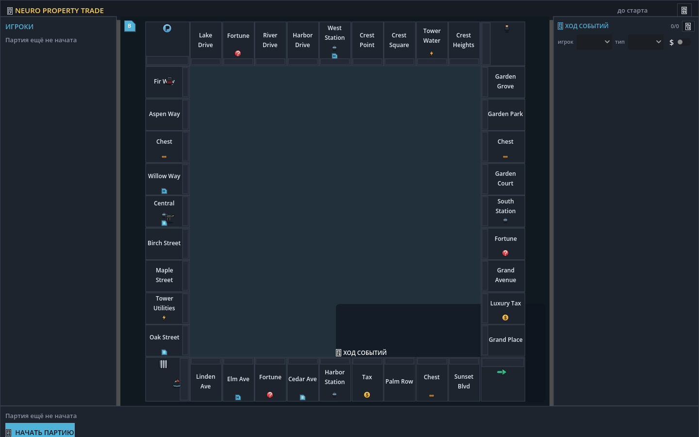
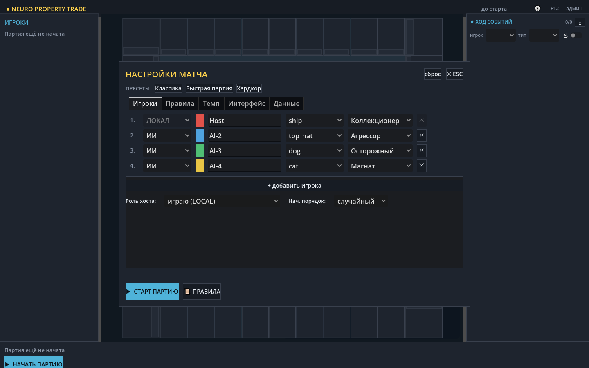
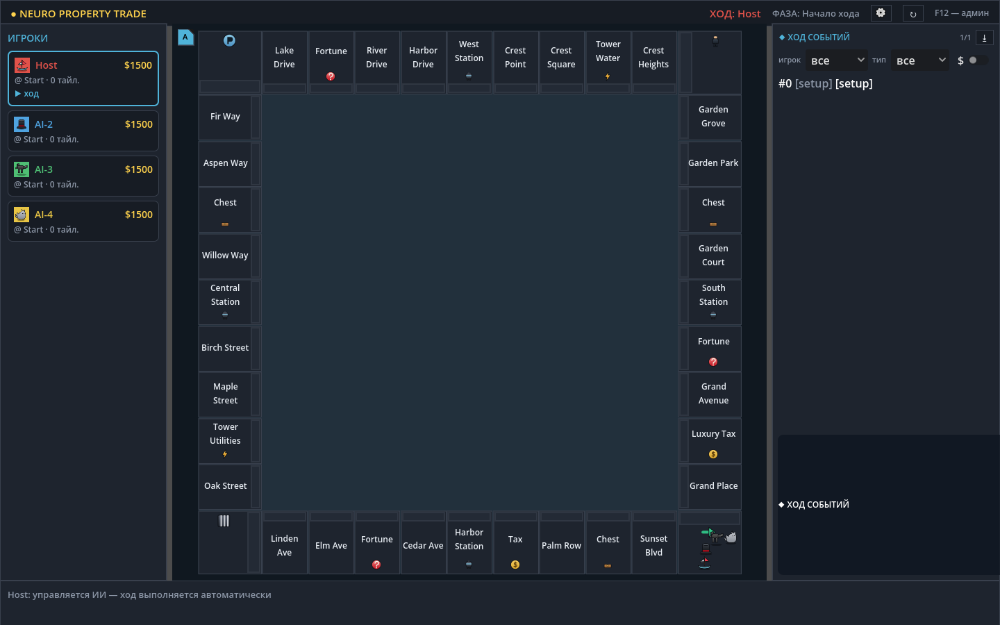

| браузер присоединился | да |
| ходов отправлено | 26 |
| принято хостом | 22 |
| кадр admin | есть |
| кадр stream | есть |
| событий в партии | 58549 |
| типов событий | 26 |
| токенов палитры совпало | 11 |
| пропорция колонок (макет / приложение) | 1.21 / 1.21 |
| регионов структуры найдено | 6 |
| расхождений | 0 |



Кадры сняты в ОДНОМ прогоне: хост, три роли и живой браузер одновременно. Скриншоты ролей делает сам Godot своим viewport, браузер — Playwright.